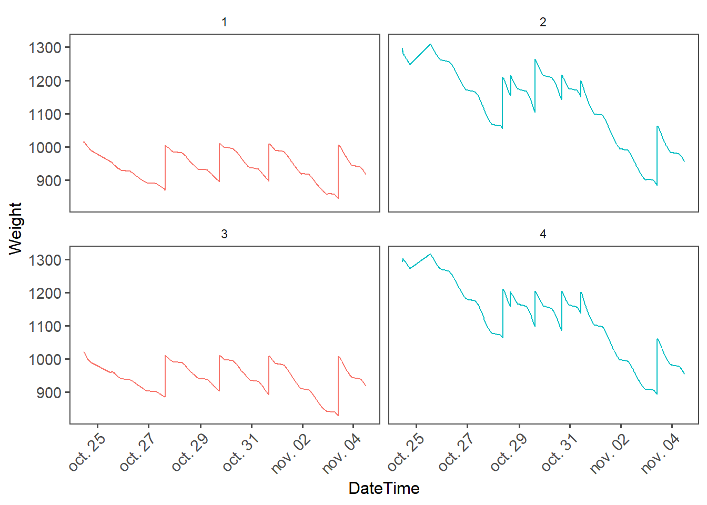
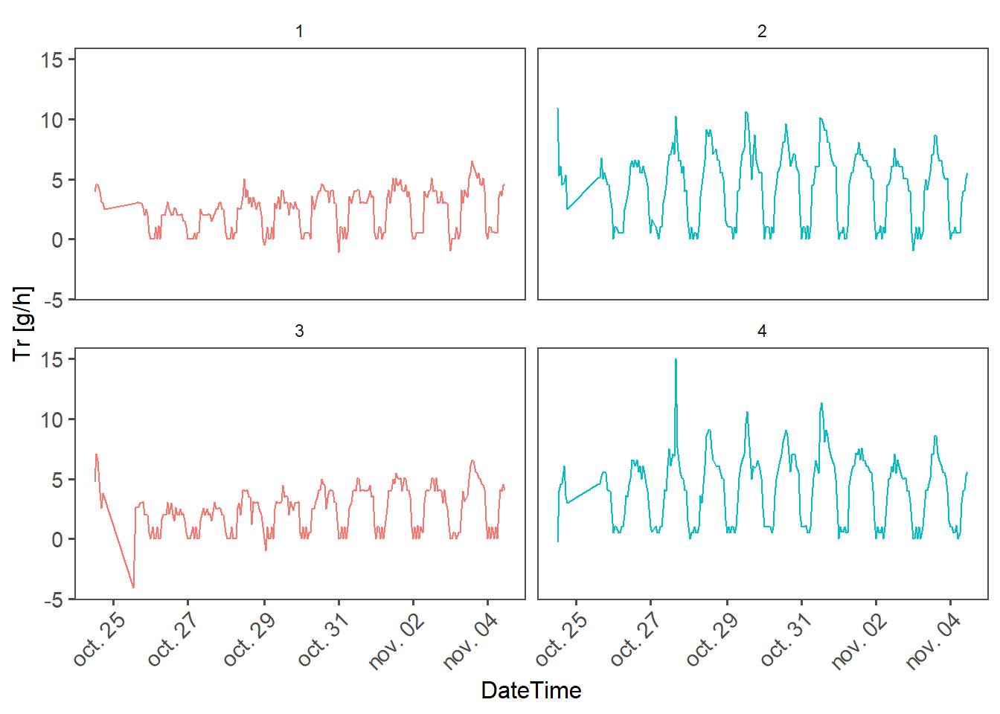
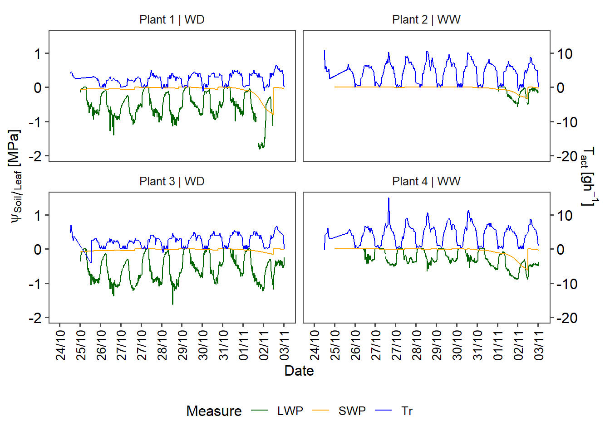

# rm(list=ls()) # clean workspace [comment when Rendering]
# setwd(dirname(rstudioapi::getActiveDocumentContext()$path)) # Set working directory to the current file [comment when Rendering]
# LOAD LIBRARIES
library(SciViews)
library(ggplot2)
library(pander)
library(dplyr)
library(tidyverse)
library(data.table)
library(anytime)
library(ggthemes)
# LOAD UTILITARY FUNCTIONS
source("src/Data_Preparation.R") # Contains functions to extract data from raw files
source("src/LWP_algorithm.R") # Contains the code of the LWP cleaning algorithm
# SET DIRECTORIES
data_path_clean <- paste0("data/clean/") # Set path to Clean folder
data_path_raw <- paste0("data/raw/") # Set path to row folder
plot_path <- paste0("plots/") # Set path to plot folder
path_LWP <- paste0(data_path_raw, "LWP/")
path_SWP <- paste0(data_path_raw, "SWP/")
path_weight <- paste0(data_path_raw, "weight/")Data Processing
0) Set up the notebook
Loading libraries and defining paths
Define a custom theme for plots
Load Metadata
Load metadata about the experiment.
Here we designed a simple experiment as example :
4 plants (
Plant_IDcolumn)2 different treatments (
Treatmentcolumn) :well watered (WW)
water deficit (WD )
Leaf water potential (\(LWP\)) was recorded with psychrometers (
PSYcolumn).Soil water potential (\(SWP\)) was recorded with TEROS 21 (
Teroscolumn).Weight (\(W\)) was recorded with scales (
Scalecolumn).
Plants_ID <- read.csv(paste0(data_path_clean, "Plants_ID.csv"))
pander(Plants_ID)| Plant_ID | PSY | Teros | Treatment | Scale |
|---|---|---|---|---|
| 1 | PSY1N909 | MP40 | WD | plant1 |
| 2 | PSY1N905 | MP01 | WW | plant2 |
| 3 | PSY1N903 | MP04 | WD | plant3 |
| 4 | PSY1N906 | MP68 | WW | plant4 |
1) Load leaf water potential data
Extract from raw files
\(LWP\) data from psychrometers are stored in separated .csv files.
We use the custom function load_LWP() to load and process each csv file in the provided path.
The result is a single table containing Date, Time, LWP value and the ID of plants.
The single file is writen as LWP_raw.csv in the raw folder.
# Compile all PSY files into one dataframe
LWP_raw <- load_LWP(path = path_LWP)
# Change the PSY id by Plant_ID
LWP_raw <- left_join(LWP_raw, Plants_ID[c("Plant_ID", "PSY")]) %>%
select(-c("PSY"))
pander(head(LWP_raw))
# Write to raw folder
write.csv(x = LWP_raw, file = paste0(data_path_raw, "LWP_raw.csv"), row.names = F)Load compiled raw file
Once the raw files are compiled, we can simply load the processed csv file.
NB : each time we load the raw.csv files, we need to format correctly the DateTime column.
# Load from Raw folder
LWP_raw <- read.csv(paste0(data_path_raw, "LWP_raw.csv")) %>%
mutate(DateTime = anytime(DateTime)) %>%
mutate(DateTime = as.POSIXct(DateTime, format = "%Y-%m-%d %H:%M:%S"))Simple plot :
p1 <- ggplot(left_join(LWP_raw, Plants_ID, by = "Plant_ID")) +
geom_line(aes(x = DateTime,
y = LWP,
color = Treatment,
group = Plant_ID)) +
ylim(-1.5, 0) +
ylab("Leaf Water Potantial [MPa]") +
facet_wrap(~Plant_ID,
# scales = "free_y",
ncol = 2) +
theme_few() + theme(axis.text.x = element_text(angle = 90))
# my_theme +
# theme(strip.text.x = element_blank())
# ggtitle("Clean LWP")
# Show plot
p1
# Save plot to folder as png
ggsave(filename = "LWP_raw.png", plot = p1, device = "png", path = plot_path, width = 9, height = 4)Clean raw file with cleaning algorithm and write clean file.
We see that data is messy, so we implemented an algorithm to clean LWP data. It consists of creating buffers per day, and for each buffer we run a bunch of tests to check if we want to keep the buffer of not.
check.naevaluates how many NAN are in the buffer. If there is more NAN than thenan.thproportion, the buffer is discarded.check.zeroevaluates how many zeros are in the buffer. If there is more zeros than thezero.thproportion, the buffer is discarded.check.cyclesevaluates if LWP at night is lesser than LWP at day. If the mean LWP at day is higher that the mean LWP at night multiplied bycycle.alpha, the buffer is discarded.check.slopeevaluates the mean slope of the buffer via a linear model. If the absolute value of the slope is higher thanslope.th, the buffer is discarded.check.levelevaluates the statistical mean of the buffer compared to the mean of the other buffers. If \(\mu_{LWP, i} < \mu_{LWP} - \alpha \cdot \sigma_{LWP}\) or \(\mu_{LWP, i} > \mu_{LWP} + \alpha \cdot \sigma_{LWP}\) (with \(\mu_{LWP}\) is the mean LWP for all buffers, \(\mu_{LWP,i}\) is the mean LWP of the ith buffer, \(\alpha\) is the unput multiplicator and \(\sigma_{LWP}\) is the standard deviation of LWP), the buffer is discarded.
Finally, the clean dataframe is written to storage.
LWP_clean <- clean.LWP(LWP_data = LWP_raw,
check.na = T,
check.zero = T,
check.cycles = T,
check.slope = F,
check.level = F,
nan.th = 0.5,
zero.th = 0.5,
cycle.alpha = 0.5,
slope.th = 0.000002,
level.alpha = 2)
LWP_clean <- LWP_clean[c("Date", "Time", "DateTime", "LWP", "Plant_ID")]
# Additionnal cleaning
LWP_clean <- LWP_clean %>%
filter(LWP > -3)
# Write to storage
write.csv(x = LWP_clean, file = paste0(data_path_clean, "LWP_clean.csv"), row.names = F)Load clean file
LWP_clean <- read.csv(paste0(data_path_clean, "LWP_clean.csv")) %>%
mutate(DateTime = anytime(DateTime)) %>%
mutate(DateTime = as.POSIXct(DateTime, format = "%Y-%m-%d %H:%M:%S"))
# Add NA so that there is gaps in geom_line
temp <- expand.grid(DateTime = unique(LWP_clean$DateTime),
Plant_ID = unique(LWP_clean$Plant_ID)
)
LWP_clean <- left_join(temp, LWP_clean, by = c("Plant_ID", "DateTime"))Simple plot :
LWP_plot <- ggplot(left_join(LWP_clean, Plants_ID, by = "Plant_ID")) +
geom_line(aes(x = DateTime,
y = LWP,
color = Treatment,
group = Plant_ID)) +
# ylim(-3, 0) +
ylab("Leaf Water Potantial [MPa]") +
facet_wrap(~Plant_ID,
# scales = "free_y",
ncol = 2) +
theme_few() + theme(axis.text.x = element_text(angle = 90))
# my_theme +
# theme(strip.text.x = element_blank())
# ggtitle("Clean LWP")
LWP_plot
ggsave(filename = "LWP_clean.png", plot = LWP_plot, device = "png", path = plot_path, width = 9, height = 4)We can make a quick graph of the comparison between Raw and Clean LWP
p <- ggplot() +
geom_line(data = LWP_raw, aes(x = DateTime, y = LWP), color = "red") +
geom_line(data = LWP_clean, aes(x = DateTime, y = LWP), color = "green") +
# ylim(-3, 0.5) +
facet_wrap(~Plant_ID) +
theme_bw()
ggsave(filename = "LWP_comparison.png",
plot = p, device = "png", path = plot_path, width = 10, height = 4)2) Load SWP data
Extract from sensor files and compile into a single raw file
Soil Water Potential data is stored in a .DAT file.
We coded a little function to convert that data into a dataframe.
# Extract from DAT files
SWP_raw <- load_SWP(path_SWP = path_SWP)
# Replace Teros_ID by Plant_ID and set DateTime as POSIXct
SWP_raw <- left_join(SWP_raw, Plants_ID[c("Plant_ID", "Teros")], by = c("Teros_ID" = "Teros")) %>%
select(c("DateTime", "SWP", "Plant_ID")) %>%
mutate(DateTime = as.POSIXct(DateTime, format = "%d/%m/%Y %H:%M"))
# Write to disk
write.csv(x = SWP_raw, file = paste0(data_path_raw, "SWP_raw.csv"), row.names = F)Load raw file, clean it a bit and write to a clean file
# Load SWP_raw
SWP_raw <- na.omit(read.csv(paste0(data_path_raw, "SWP_raw.csv"))) %>%
mutate(DateTime = anytime(DateTime)) %>%
mutate(DateTime = as.POSIXct(DateTime, format = "%Y-%m-%d %H:%M:%S"))
# Filter data so DateTime match with LWP
SWP_clean <- SWP_raw %>%
filter(DateTime >= min(LWP_clean$DateTime) & DateTime <= max(LWP_clean$DateTime)) %>%
filter(DateTime > as.POSIXct("2024-10-25"))
# Write to disk
write.csv(x = SWP_clean, file = paste0(data_path_clean, "SWP_clean.csv"), row.names = F)Simple plot :
SWP_plot <- ggplot(left_join(SWP_clean, Plants_ID, by = "Plant_ID")) +
geom_line(aes(x = DateTime, y = SWP, color = Treatment)) +
facet_wrap(~Plant_ID) +
theme_bw() + my_theme
SWP_plot
ggsave(filename = "SWP_clean.png",
plot = SWP_plot, device = "png", path = plot_path, width = 9, height = 4)3) Weight
Extract from sensor output files and compile into one single raw file
# Load raw data
W_raw <- load_Weigth(path = path_weight, skip = 1) %>%
inner_join(Plants_ID[c("Plant_ID", "Scale")], by = "Scale") %>%
mutate(Date = as.Date(Date, format = "%d/%m/%Y")) %>%
select(-c("Scale"))
# Write to disk
write.csv(x = W_raw, file = paste0(data_path_raw, "W_raw.csv"), row.names = F)Load raw file, clean a bit and write clean file
# Load raw file
W_raw <- unique(read.csv(paste0(data_path_raw, "W_raw.csv"))) %>%
mutate(DateTime = anytime(DateTime)) %>%
mutate(DateTime = as.POSIXct(DateTime, format = "%Y-%m-%d %H:%M:%S"))
# Cleaning
W_clean <- W_raw %>%
filter(DateTime >= as.POSIXct("2024-10-24 11:00:00"))
# Check plot
W_plot <- ggplot(W_clean %>% left_join(Plants_ID, by = "Plant_ID")) +
geom_line(aes(x = DateTime, y = Weight, color = Treatment)) +
facet_wrap(~Plant_ID) +
theme_bw() + my_theme
W_plot
ggsave(filename = "W_clean.png",
plot = W_plot, device = "png", path = plot_path, width = 9, height = 4)
# Write to disk
write.csv(x = W_clean, file = paste0(data_path_clean, "W_clean.csv"), row.names = F)4) Compute Transpiration rate
We use a custom function to compute transpiration rate \(T_r\) from weight time series using the formula :
\[ T_{r, t} [g \cdot h^{-1}] = (W_{t-1} - W_{t}) / \Delta t \]
# Load clean Weight file
W_clean <- unique(read.csv(paste0(data_path_clean, "W_clean.csv"))) %>%
mutate(DateTime = anytime(DateTime)) %>%
mutate(DateTime = as.POSIXct(DateTime, format = "%Y-%m-%d %H:%M:%S"))
# Compute Tr using custom function
Tr_raw <- compute_Tr(W = W_clean, th = 20, DT.format = "%Y-%m-%d %H:%M:%S")
# Write to disk
write.csv(x = Tr_raw, file = paste0(data_path_raw, "Tr_raw.csv"), row.names = F)Load Tr raw from file
# Read Tr raw fil from folder
Tr_raw <- unique(read.csv(paste0(data_path_raw, "Tr_raw.csv"))) %>%
mutate(DateTime = anytime(DateTime)) %>%
mutate(DateTime = as.POSIXct(DateTime, format = "%Y-%m-%d %H:%M:%S"))Simple plot
Tr_plot <- ggplot(left_join(Tr_raw, Plants_ID, by = "Plant_ID")) +
geom_line(aes(x = DateTime, y = Tr, color = Treatment)) +
facet_wrap(~Plant_ID) +
ylab("Tr [g/h]") +
theme_bw() + my_theme
Tr_plot
ggsave(filename = "Tr_raw.png",
plot = Tr_plot, device = "png", path = plot_path, width = 9, height = 4)Make one plot with the 3 variables
Create a gigantic file with every time series measurment
LWP_temp <- LWP_clean[c("Plant_ID", "DateTime", "LWP")] %>%
gather(LWP, key = "Measure", value = "Value")
SWP_temp <- SWP_clean[c("Plant_ID", "DateTime", "SWP")] %>%
gather(SWP, key = "Measure", value = "Value") %>%
mutate(Value = Value/1000)
W_temp <- W_clean[c("Plant_ID", "DateTime", "Weight")] %>%
gather(Weight, key = "Measure", value = "Value") %>%
mutate(Value = Value/1500)
T_temp <- Tr_raw[c("Plant_ID", "DateTime", "Tr")] %>%
gather(Tr, key = "Measure", value = "Value") %>%
mutate(Value = Value/10)
TS_full <- rbind(LWP_temp, SWP_temp) %>%
rbind(T_temp) %>%
left_join(Plants_ID, by = "Plant_ID") %>%
mutate(Plant_name = paste0("Plant ", Plant_ID, " | ", Treatment))Plot the whole thing
full_plot <- ggplot(TS_full) +
geom_line(aes(x = DateTime, y = Value, color = Measure)) +
scale_color_manual(values = c("darkgreen", "orange", "blue")) +
scale_x_datetime(date_breaks = "1 day",
date_labels = "%d/%m",
limits = as.POSIXct(strptime(c("2024-10-24 00:00:00","2024-11-04 00:00:00"),
format = "%Y-%m-%d %H:%M:%S")),
name = "Date") +
scale_y_continuous(limits = c(-2, 1.5),
bquote(expr = psi[Soil/Leaf]~"[MPa]"),
# sec.axis = sec_axis(~.*1500, name = "Weight (g)")
sec.axis = sec_axis(~.*10, name = bquote(T[act]~"["*gh^-1*"]"))
) +
facet_wrap(~Plant_name) +
theme_few() +
theme(axis.title = element_text(color = "black", size=12),
# legend.text = element_text(size = 12),
# legend.title = element_text(size = 16),
legend.position = "bottom",
axis.text.x = element_text(color = "black",angle = 90,vjust = 0.5, size = 10),
axis.text.y = element_text(color = "black",size = 12),
# axis.line = element_line(color = "black",size=1)
)
# ggtitle("Time series measurements")
full_plotWarning: Removed 216 rows containing missing values (`geom_line()`).
ggsave(filename = "Full_plot.svg",
plot = full_plot, device = "svg", path = plot_path, width = 7, height = 6)Warning: Removed 216 rows containing missing values (`geom_line()`).